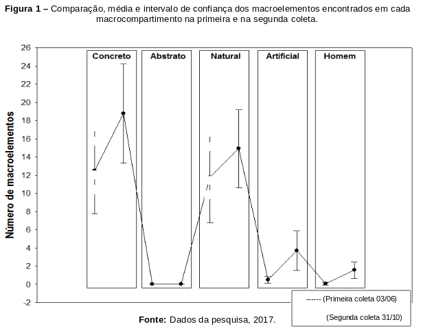

Resultados
Apresentação e Análise dos Resultados
A coleta e a organização dos dados foram realizadas a partir dos seguintes eixos analíticos: caracterização do ambiente,
recursos ambientais, Educação Ambiental e Futebol Educacional.
Ao final das entrevistas foi perguntado aos alunos o que eles tinham achado do processo vivido ao longo dos
cinco meses de convivência e o que eles tinham aprendido com as aulas de futebol. Todos os alunos coincidiram
em que as aulas tinham transformado a sua concepção de meio ambiente, que a educação pode trazer coisas positivas
para a vida de cada um e que pode direcionar os seus passos para um caminho diferente do que é vivido na realidade
de cada um.
Ao final do período experimental, ao serem indagados “Como você vê o ambiente ao seu redor com a prática constante
do futebol?” foi evidenciada uma mudança quanto à percepção do ambiente por todos os sujeitos envolvidos na pesquisa
– “o ambiente que vivemos é cheio de coisas bonitas, tem agua, plantas, se cuidar vai ser melhor, porque vai
nos beneficiar, se não cuidar, vai morrer tudo, vamos ficar sem agua, sem mar – tudo poluído. As aulas nos mostram
que pode ser diferente”.
Representação Social do Meio Ambiente Através do Desenho
Na Tabela 11 e na Figura 1 foram comparados a média e o intervalo de confiança entre o número de macroelementos encontrados em cada macrocompartimento (concreto, abstrato, natural, artificial, homem) antes e após a aplicação da metodologia do Futebol Educacional. Observa-se na Tabela 11 que todos os macrocompartimentos apresentaram um aumento da média e do intervalo de confiança na segunda coleta (31/10). Além disso, observa-se uma predominância dos elementos contidos nos macroelementos concreto e natural, fato este que não diminui a importância do aumento significativo da média e do intervalo de confiança dos macroelementos artificial e homem, ou seja, após a aplicação da metodologia, houve aumento das variáveis pesquisadas, exceto no macroelemento abstrato que não apresentou diferença entre os dois momentos. Esses resultados estão graficamente representados na Figura 3, onde se observa o intervalo de confiança (95%) e a média de cada macroelemento representados pelas barras verticais e os pontos, respectivamente.

Discussão
Ao longo do tempo surgiram muitos estudos sobre o esporte, dentre eles o futebol (TUBINO 2001; BARBANTI, 2006; CONSTANTINO
2007; TUBINO, 2011; CORRÊA 2013; entre outros). Em contrapartida, outros estudiosos vêm se debruçando sobre as
problemáticas e definições do meio ambiente e Educação Ambiental (SANTOS, 2014; CARVALHO 2014; SAUVÉ, 2016; PESSINI
E SGANZERLA, 2016). Contudo, é notória a escassez de trabalhos que avaliem a contribuição do futebol ou outras
modalidades de esportes para a educação socioambiental, seja através da educação formal ou inseridos em projetos
sociais.
Partindo do conceito de percepção ambiental, que pode ser definido como sendo uma tomada de consciência do ambiente
pelo homem, ou seja, o ato de perceber o ambiente em que se está inserido, aprendendo a proteger e a cuidar do
mesmo (FOGGIANATO, 2011), este estudo avaliou a percepção socioambiental de crianças, antes e após participarem
de aulas de Futebol Educacional. Esta investigação trouxe novas possibilidades de atuação do esporte (futebol)
como agente de transformação social, tanto na educação escolar como na formação não escolar, servindo como mais
um instrumento de atração, retenção e conscientização diante das atitudes socioambientais.
Ressalta-se que, até o presente momento, este é o único estudo na literatura que propõe a utilização de esporte
educacional, na modalidade de futebol, como ferramenta aliada à Educação Ambiental na transformação da consciência
socioambiental em crianças.
Os resultados obtidos nas entrevistas mostram que houve avanços significativos da compreensão dos alunos quanto
ao meio ambiente. Inicialmente, o conhecimento era vago, poucos alunos sabiam responder e os que respondiam apresentavam
respostas curtas e diretas. Alguns alunos insistiam para que o mediador desse pistas da caracterização do meio
ambiente, porém a intenção era conhecer o nível de informação de cada indivíduo, para que os alunos passassem
a interagir melhor com a temática. Foram desenvolvidas aulas teóricas e após a aplicação dessas aulas foi realizada
uma segunda entrevista que mostrou que os alunos evoluíram e passaram a ver o meio ambiente de outra forma.
Pôde-se observar essa diferença em várias ocasiões durante a intervenção, como por exemplo, quando os indivíduos
foram perguntados sobre o significado de meio ambiente. No primeiro encontro houve uma predominância de elementos
naturais (árvores, animais, nuvens, rios, etc.), caracterizando uma visão naturalista. Entretanto, no segundo
momento, o discurso remeteu a um sentindo mais amplo, que coincide com a totalidade de elementos e suas inter-relações
de convivência.
Em conformidade, Carvalho (2014) evidencia que a visão socioambiental é abrangente, pois é formada pela interação
do homem-natureza e suas relações, tornando-o parte do meio, sendo este transformador e transformado pelos elementos
que o cercam. Desta maneira, pode-se conceituar meio ambiente como tudo aquilo que cerca o ser humano e faz parte
de seu desenvolvimento e transformação.
É importante salientar que os participantes demonstraram possuir um conhecimento prévio sobre os recursos ambientais,
mesmo não tendo ideia da importância destes para a sociedade. Quando trabalhadas a relevância e a aplicabilidade
destes recursos durante as aulas, as crianças demonstraram uma visão mais holística acerca do meio ambiente de
forma que se incluíram no cenário ambiental, além da tomada de consciência sobre o uso não-racional de recursos
hídricos, a poluição atmosférica e o descarte inadequado de resíduos, os quais podem, por exemplo, causar impactos
ambientais prejudiciais no seu cotidiano.
Segundo Gerent (2011), as relações homem-natureza ao longo da história humana são pautadas na dominação do primeiro
sobre a segunda, culminando em crises ambientais de proporções globais. Diante desse cenário, diversos autores
defendem um novo relacionamento entre homem e natureza, no qual se reconhece que todos os elementos existentes
no planeta terra estão interligados e que há interdependência entre os indivíduos, a sociedade e o meio ambiente/natureza
(ALBUQUERQUE, 2007; TRES; REIS; SCHLINDWEIN, 2011; NAVES; BERNARDES, 2014).
Neste sentido, a Educação Ambiental tem por finalidade formar indivíduos preocupados com os problemas ambientais e
que almejem a defesa e preservação dos recursos ambientais e sua sustentabilidade, dentro de uma visão holística
e cidadã. A Educação Ambiental deve ser excercida no dia-a-dia, seja nas instituições de ensino, na sociedade
ou em casa.
Desta forma, para que haja essa mudança de paradigma na compreensão das complexas relações que permeiam o binômio
homem-natureza, a Educação Ambiental se constitui em uma ferramenta eficaz que sensibiliza os atores sociais
a buscarem o equilíbrio em todas as suas ações cotidianas e desmistifica a ideia de abundância permanente dos
recursos naturais em que se acreditava no início das civilizações (JACOBI, 2003; SILVA; MARTINS, 2017).
Foi observado também que, embora os alunos conheçam e pratiquem o futebol, estes não compreendem as suas peculiaridades
e regras. Para os alunos, o conhecimento obtido a partir das aulas de Futebol Educacional trouxe benefícios,
passaram a cumprir as regras, ver o futebol com outros olhos, passaram a ser mais compreensivos e menos violentos.
Nesta conjuntura, as entrevistas revelaram que o esporte passou de ser uma simples atividade física esportiva
a ser um elemento transformador das relações socioafetivas, sendo observado no relato que os entrevistados passaram
a desenvolver uma maior consciência sobre a criminalidade, além de aprender a respeitar os colegas, os professores
e o meio ambiente.
Alguns estudos têm demonstrado a eficácia de diversas modalidades de esportes, tanto no bem-estar físico quanto
na transformação das relações sociais, seja em público jovem, adulto ou idoso (SAGE, 1986; SALLIS; PROCHASKA;
TAYLOR, 2000; ALLENDER; COWBURN; FOSTER, 2006 ). De forma complementar, quanto aos benefícios para os jovens
em termos de relações sociais, compreende-se que articular atividade física e vida social é uma possibilidade
que contribui para o desenvolvimento humano, especificamente para o adolescente. Neste sentido, Barbosa (1991)
descreve algumas vantagens da prática do esporte:
Estimula a socialização, serve como um antídoto natural de vícios, ocasiona maior empenho na busca de objetivos, reforça a autoestima, ajuda a equilibrar a ingestão e o gasto de calorias e leva a uma menor predisposição a moléstias.
As entrevistas também pontuaram um outro dado importante: um maior incentivo familiar na participação do jovem nas aulas
de Futebol Educacional ao longo do período estudado. A participação dos pais no desenvolvimento esportivo de
crianças e adolescente tem sido objeto de estudo de diversos autores (VILANI; SAMULSKI, 2002; GOMES; CARVALO;
VARGAS, 2015; FONSECA; STELA, 2015). Assim Fonseca e Stela (2015), por exemplo, consideram que na infância o
incentivo familiar é de fundamental importância para a prática esportiva bem-sucedida. A persistência, a autoestima,
a confiança e a motivação também estão presentes no cotidiano da iniciação esportiva. Por isso, a família se
constitui em um ambiente social primário e fértil, onde o jovem pode desenvolver sua potencialidade para a prática
de esportes. A qualidade dos incentivos e os exemplos dos pais variam em termos de engajamento como a principal
força de influência sobre os filhos. O incentivo, portanto, é uma atividade adulta essencial para as crianças
adquirirem autoestima, controle e consciência de ter o pai ou a mãe como um agente incentivador. É uma indicação
de que o mundo dos adultos exerce uma atividade efetiva sobre a vida esportiva das crianças.
As crianças desenham para significar seu pensamento, sua imaginação, seu conhecimento, criando um mundo simbólico
de objetivação do seu pensamento, ou seja, os desenhos representam uma possibilidade de expressão para simbolizar
o real (SILVA; SOUZA, 2011). Nesse sentido, a metodologia de análise de desenhos para compreender a percepção
dos indivíduos e suas relações com o meio ambiente vem sendo recentemente utilizada por alguns autores (PEDRINI;
DE-PAULA, 2008; SILVA; SOUZA, 2011; SANTOS et al., 2017).
A partir da análise quantitativa dos desenhos, após a aplicação da metodologia de esporte educacional, no geral,
observou-se um maior número de macroelementos dentro dos macrocompartimentos (natural, artificial, concreto,
abstrato, homem) expostos na segunda coleta, exceto no macrocompartimento abstrato, que não apresentou diferença
entre as duas coletas. Adicionalmente, houve uma maior representação do macrocompartimento humano, associado
a um maior predomínio do macrocompartimento natural, representado pelo aumento no número dos macroelementos edáficos,
faunísticos e florísticos neste mesmo período, visto que houve também um aumento da presença de elementos artificiais
(casas, prédios, carros, elementos modificados pelo homem).
Estes resultados estão alinhados com as respostas obtidas nas entrevistas, na medida em que demonstram uma percepção
mais integrada do ser humano com o ambiente que o cerca. Um resultado interessante na segunda coleta foi a representação
inédita dos macroelementos pai e mãe, o que corrobora o relato nas entrevistas de maior apoio da família à participação
das crianças nas aulas de Futebol Educacional, garantindo maior possibilidade de aprendizagem e permitindo ao
aluno refletir sobre sua própria prática. Por outro lado, a relação afetiva da família faz com que haja equilíbrio
e maior concentração nas atividades realizadas.
De forma similar, o predomínio de macrocompartimentos naturais nas representações sociais também foi reportado
nos resultados obtidos por meio de desenhos em estudos que propuseram atividades de Educação Ambiental em diversos
contextos: meninas institucionalizadas (PEDRINI; DE-PAULA, 2008), crianças em vulnerabilidade socioeconômica
(REIGADA; TOZONI-REIS, 2004) e estudantes do ensino fundamental (MACIEL, 2012; CATANHEDE et al., 2016).
Dessa forma, a utilização de desenhos como meio de representação da percepção socioambiental de crianças e jovens
se constitui como um método aliado no planejamento de atividades em Educação Ambiental, assim como ferramenta
avaliativa do seu impacto na população estudada.
A prática de esportes, que é incentivada principalmente pela Educação Física, tem como proposta promover o desenvolvimento
físico e cognitivo, a socialização, a educação pelo movimento e o cuidado com o corpo, sempre respeitando o ritmo
e o desenvolvimento do aluno. Da mesma forma, o profissional educador físico, assim como todo educador, procura
conscientizar as pessoas sobre o seu papel na sociedade, sobre o mundo, no sentido de transformá-lo em um mundo
mais humano. A conscientização, por sua vez, é uma das principais estratégias para mudança de atitude do ser
humano perante a natureza. Faz parte do objetivo geral do processo pedagógico da Educação Ambiental a conscientização
de si e do meio.
Da mesma maneira, a inserção da dimensão socioambiental na Educação Física escolar potencializa a compreensão
do educando como elemento integrante da natureza, em todas suas dimensões (biológica, psicológica, social e cultural,
entre outras), além de ser uma resposta a uma demanda social crescente de desenvolver valores socioambientais
(INÁCIO; MORAES; SILVEIRA, 2013).
Entretanto, segundo Dominguez, Kunz e Araújo (2011) é necessário refletir que o campo de formação de professores
em Educação Física apresenta algumas particularidades que, na visão desses autores, são limitadoras do trabalho
pedagógico relacionado à Educação Ambiental, tais como: fragmentação do conhecimento nos cursos de formação de
professores em Educação Física e o caráter esportivo nas disciplinas.
Outro fator relevante deste estudo é a importância que os projetos sociais têm para a sociedade civil. Partindo
desse pressuposto, Feijó e Macedo (2012) reforçam que as ações conjuntas e encadeadas destes projetos visam o
desenvolvimento social, a partir do trabalho em grupo com os indivíduos. São projetos voltados para as atividades
de desenvolvimento cognitivo e psíquico, para propiciar autonomia, protagonismo e participação de forma efetiva
e transformadora no meio no qual se está inserido.
Nesse sentido, os entrevistados relataram contentamento com a sua inserção nas atividades desenvolvidas pelo
CRER-BA, cenário deste estudo, na medida que reconheceram mudanças atitudinais no seu cotidiano, como por exemplo,
mais respeito e compreensão em relação aos seus colegas. Esse dado corrobora a crença de que projetos sociais
atuam na fortificação do sujeito e de suas relações com a comunidade, no que diz respeito ao desenvolvimento
pessoal, assertividade, autoestima, iniciativa, visão de si mesmo, relação com o próximo e percepção das necessidades
da família e da comunidade (SZYMANSKI, 2002; SAWAIA, 2003).
A mudança de atitude dos alunos em relação à percepção do ambiente em que se inserem pôde ser constatada nos
relatos, sendo a coexistência do homem, de elementos naturais e concretos também evidente nos desenhos analisados
no segundo momento. Dessa forma, observa-se que a metodologia contribuiu para a expansão da percepção ambiental
dos indivíduos, uma vez que evoluíram de uma percepção naturalista, por apresentar, de maneira significativa,
no primeiro momento em seus desenhos, elementos relativos aos aspectos naturais, bióticos e abióticos do meio
ambiente para uma visão mais integrada deste.
Por fim, espera-se que este trabalho oriente estudos futuros a serem desenvolvidos na área de Educação Física
com a temática de Educação Ambiental como eixo transversal em suas práticas e, assim, contribuir com a formação
de uma sociedade de base sustentável, na reorientação e na capacitação das pessoas para a construção de um novo
paradigma de desenvolvimento local, influenciando na formação de cidadãos mais conscientes, melhor preparados
para a tomada de decisões e atuantes na realidade socioambiental vigente, com um comprometimento com a vida e
o bem- estar físico e social de cada indivíduo e da sociedade, tanto a nível local quanto global.
Conclusão
Este estudo apresentou uma análise a respeito da influência do Futebol Educacional no aprendizado socioambiental de jovens, auxiliando a educação socioambiental na conjuntura escolar e não escolar. A análise das entrevistas e dos desenhos deram resultados que justificam a utilização do Futebol Educacional como ferramenta de conscientização socioambiental, pois a evolução foi notória a partir do momento que os alunos passam a identificar com maior clareza a concepção do meio ambiente, partindo do ponto de vista de que os indivíduos possuíam uma visão completamente naturalista, fato este que foi observado tanto no discurso, quanto na análise dos desenhos, nos quais predominavam os macroelementos existentes no meio natural.
Após as aulas teóricas sobre a importância do meio ambiente, foi evidente o aumento da quantidade de macroelementos desenhados, fazendo com que a média e o intervalo de confiança dos macroelementos existentes em cada macrocompartimento aumentasse, dados estes que corroboram um conceito socioambiental de meio ambiente, visando reconhecer o meio como a totalidade de elementos e a interação do homem com a natureza.
Por fim, este é o único trabalho na literatura que trata da influência do Futebol Educacional nas transformações socioambientais em crianças e adolescentes, sendo este um aporte metodológico que possivelmente servirá de esboço para o desenvolvimento de práticas que aliem o esporte à temática ambiental a ser utilizadas por escolas ou projetos sociais. Dessa forma, visto os resultados obtidos por esta pesquisa, mais estudos buscando a compreensão do binômio natureza-esporte como estratégia de desenvolvimento de uma consciência ambiental são encorajados.